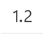
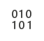
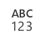

7 Daten importieren
Viele Excel Arbeitsmappen kombinieren Berechnungen und Daten. Excel kann allerdings auch Daten aus anderen Quellen importieren. Quellen können andere Dateien, Datenbanken oder Web-APIs sein und in verschiedenen Formaten vorliegen. Dafür stellt Excel Parser für verschiedene Dateiformate bereit, damit die Daten importiert werden können.
Daten werden korrekt mit dem Kommando Daten abrufen (Power Query) importiert. Das Kommando ist in der Gruppe Daten im Abschnitt Daten abrufen und transformieren zu finden. Das Kommando Daten abrufen startet die sog. Power Query Umgebung. In dieser Umgebung können Daten aus verschiedenen Quellen importiert und vor der Bereitstellung korrigiert werden.

Power Query ist eine Umgebung für den Datenimport, die von verschiedenen Microsoft Produkten verwendet wird. Die Umgebung ist in Excel, Power BI, Power Apps und Power Automate verfügbar. Power Query stellt eine einheitliche Schnittstelle für den Datenimport bereit und basiert auf einer Import-Beschreibungssprache. Mit diese Sprache lassen sich Daten für die Arbeit vorbereiten, so dass viele Datenbereinigungsschritte in Excel Arbeitsmappen entfallen können.

Zu den zentralen Funktionen von Power Query gehören:
- Quellenmanagement
- Überschriftenerkennung
- Schemaerkennung und -transformation
- Entfernen von Duplikaten und ungültigen Werten
- Vektorisierung von Daten
- Kombinieren von Daten aus verschiedenen Quellen
Viele tabellarische Dateiformate lassen sich direkt mit Excel öffnen. Das sollte nur mit Excel Arbeitsmappen erfolgen. Bei anderen Dateiformaten kann das direkte öffnen zu Datenverlusten oder Datenfehlern führen. Diese lassen sich in Excel nur umständlich korrigieren.
Ausserdem lassen sich direkt geöffnete Dateien nicht mehr erweitern, was die Datenerhebung erschwert.
Das Kernprinzip von Power Query ist das Verbinden einer Datenquelle mit einer Arbeitsmappen. Entsprechend heissen importierte Daten im Excel Jargon Datenverbindungen. Die Datenquelle wird dabei nicht in die Arbeitsmappe übernommen, sondern nur eine Verbindung zu der Datenquelle hergestellt. Dadurch kann eine Datenquelle in mehreren Arbeitsmappen verwendet werden und sich ändern, ohne dass die Arbeitsmappe angepasst werden muss.
Das Ergebnis eines Imports ist immer eine Tabelle.
7.1 Datenverbindungen herstellen
Eine Datenverbindung wird über das Kommando Daten abrufen (Power Query) ausgelöst. Das Kommando ist in der Gruppe Daten im Abschnitt Daten abrufen und transformieren zu finden. Das Kommando bereitet den Import durch Power Query vor, indem zuerst das Dateiformat und anschliessend die zugehörige Datenquellen ausgewählt wird. Nach diesen Schritten kann Excel die Daten Laden oder die Daten transformieren (s. Abbildung 7.3).
Die Daten sollten nur in Ausnahmefällen unkontrolliert geladen werden. Die Daten sollten vor dem Importieren in Power Query überprüft und transformiert werden. Dadurch wird sichergestellt, dass die Daten korrekt importiert werden.
Wird die Option Daten transformieren ausgewählt, öffnet sich der Power Query Editor. In diesem Editor können die Daten überprüft und transformiert werden. Das Transformieren der Daten umfasst vier Arten der Transformation:
- Datentypanpassungen
- Spaltenauswahl
- Datentrennung
- Daten kombinieren
Für jede Transformation wird ein Schritt in Power Query angelegt. Die Schritte werden in der Reihenfolge der Ausführung angezeigt. Die Reihenfolge der Schritte kann verändert werden, indem die Schritte mit der Maus verschoben werden. In der Mitte des Power Query Fensters wird eine Datenvorschau angezeigt, die die Auswirkungen der Transformationen zeigt.
Standardmässig werden drei bzw. bei Excel Arbeitsmappen vier Schritte in Power Query automatisch konfiguriert:
Quelle- Bei Excel Arbeitsmappen folgt dem Schritt
Quelleder SchrittNavigationzur Auswahl des Arbeitsblattes.
- Bei Excel Arbeitsmappen folgt dem Schritt
HöherstufenGeänderter Typ(Windows) bzw.geänderter Spaltentyp(MacOS)
Der Schritt Geänderter Typ enthält die Schemadefinition. Power Query versucht das Schema automatisch zu erkennen. Das funktioniert besonders bei Zahlenwerten nicht immer zuverlässig. Deshalb muss das Schema immer kontrolliert und gegebenenfalls angepasst werden.
Nachdem das Schema kontrolliert wurde, können die Daten nach Excel importiert werden. Dazu wird das Kommando Schließen & laden in Power Query Menukategorie Start ausgeführt.
Nach einem Datenimport liegen die Daten in der Arbeitsmappe als Tabelle vor. Diese Daten sind eine Kopie der Daten in der Datenquelle. Dadurch kann die Arbeitsmappe unabhängig von der Datenquelle verwendet und geteilt werden.
Excel betrachtet jeden Datenimport als Sicherheitsproblem. Daher werden Datenverbindungen beim Öffnen einer Arbeitsmappe standardmässig deaktiviert. Beim Öffnen einer Arbeitsmappe mit einer Datenverbindung wird eine Warnung angezeigt. Um mit den importierten Daten arbeiten zu können, muss die Datenverbindung aktiviert werden.
Wird die Datenverbindung nicht aktiviert, werden Funktionen die auf die Daten zugreifen nicht ausgeführt, sondern nur die Ergebnisse der letzten Ausführung angezeigt.
7.2 Datenschema anpassen
Die einfachste Möglichkeit zur Anpassung des Datenschemas ist die Verwendung der Menukategorie Transformation. Dieses Menu zeigt alle verfügbaren Transformationen an. Die Transformationen sind in sechs Kategorien gegliedert:
TabelleBeliebige SpalteTextspalteZahlenspalteDatums- & UhrzeitspalteStrukturierte Spalte
Für das Datenschema sind die folgenden Transformationen wichtig:
DatentypUmbenennenVerschiebenSpalte teilen
Die meisten Transformationen gehören konzeptionell zu späteren Kapiteln.
Gruppieren nachundWerte ersetzenwerden im Kapitel 13 behandelt.Vertauschenwird im Kapitel 12 behandelt.Zellen zählen,Ausfüllenund alle Transformationen in den KategorienZahlenspalten,Datums- & UhrzeitspaltenundStrukturierte Spaltenwerden im Kapitel 11 behandelt.Spalte pivotisierenundSpalte entpivotisierenwerden im Kapitel 14 behandelt.Format,AnalysierenundExtrahieren(KategorieTextspalte) werden im Kapitel 9 behandelt.
In diesen Kapiteln werden die Transformationen von Power Query separat hervorgehoben.
7.2.1 Datentyp anpassen
Die wichtigste Transformation ist die Anpassung des Datentyps. Der Datentyp bestimmt, wie die Daten interpretiert werden. Die Interpretation der Daten bestimmt, welche Operationen auf die Daten angewendet werden können.
Die Datentypen müssen im Schritt Geänderter Typ (Windows) bzw. geänderter Spaltentyp (MacOS) angepasst werden.
Power Query zeigt neben den Spaltenüberschriften mit einem Symbol den Datentyp der Spalte an. Tabelle 7.1 zeigt die Symbole für die verschiedenen Datentypen. Zusätzlich wird der Datentyp im Menubalken neben dem Kommando Datentyp angezeigt. Die Datentypen sind in vier Kategorien unterteilt:
- Zahlen
- Datum und Uhrzeit
- Zeichenketten
- Wahrheitswerte
Im Gegensatz zu Excel behandelt Power Query Datum und Uhrzeit als eigenen Datentyp. Power Query muss diese Unterscheidung machen, weil in den Datenquellen diese Werte als Zeichenketten kodiert vorliegen. Dabei handelt es sich um strukturierte Daten. Power Query hat für diese Daten spezielle Parser, die die Zeichenketten aus der Datenquelle in Zahlenwerte für Excel umwandeln.
| Datentyp | Symbol | Kategorie | Bemerkungen |
|---|---|---|---|
| Text | Zeichenketten | ||
| TRUE/FALSE | Wahrheitswerte | ||
| Dezimalzahl |  | Zahlen | |
| Ganze Zahl | Zahlen | ||
| Prozentzahl | Zahlen | Dezimalzahl mal 100 |
|
| Währung | Zahlen | Dezimalzahl mit Währungsformatierung | |
| Binärzahl |  | Zahlen | Ganzzahl |
| (Zahl) mit Gebietsschema |  | Zahlen | Das Gebietsschema legt den Tausender- und Dezimaltrenner fest |
| Datum/Uhrzeit | Datum und Uhrzeit | Zeitstempel als formatierte Dezimalzahl | |
| Datum | Datum und Uhrzeit | Ganzzahl mit Datumsformatierung | |
| Uhrzeit | Datum und Uhrzeit | Dezimalzahl zwischen 0 und 1 mit Zeitformatierung | |
| Dauer | Datum und Uhrzeit | Dezimalzahl als Zeitdauer | |
| Datum/Uhrzeit/Zeitzone | Datum und Uhrzeit | Internationalisierter Zeitstempel als formatierte Dezimalzahl, die Zeitzone muss in den Werten kodiert sein, sonst wird +1 angenommen. |
Der Datentyp einer Spalte lässt sich mit dem Kommando Datentyp anpassen. Wird auf das Kommando im Menubalken geklickt, öffnet sich eine Auswahlliste, aus der der richtige Datentyp ausgewählt werden kann (Abbildung 7.6). Wird der Datentyp geändert, dann erfolgt eine Abfrage (s. Abbildung 7.7), ob der Datentyp im aktuellen Arbeitsschritt ersetzt werden soll (Aktuelle ersetzen) oder ob ein neuer Arbeitsschritt eingefügt werden soll (Neuen Schritt hinzufügen). Hier kann normalerweise Aktuelle ersetzen ausgewählt werden.
Gelegentlich müssen Zahlen an das richtige Gebietsschema angepasst werden, damit die Werte korrekt eingelesen werden. Das ist immer dann notwendig, wenn das Dezimaltrennzeichen in der zu importierenden Datei vom aktuellen Gebietsschema abweicht.
Unter MacOS können gebietsspezifische Datenformate sowohl über den Menübalken Transformieren als auch über die Spaltenüberschrift erreicht und angepasst werden.
Unter Windows ist die Option mit Gebietsschema nur hinter dem Datentyp-Icon über die Spaltenüberschrift erreichbar. Dazu wird mit der rechten Maustaste auf die Spaltenüberschrift geklickt und anschliessend das Untermenü Typ ändern ausgewählt. Dort findet sich ganz unten der Punkt Mit Gebietsschema.... Alternativ lässt sich dieses Menü auch erreichen, indem mit der linken Maustaste auf das Datentyp-Icon links neben der Spaltenüberschrift geklickt wird. Beide Optionen funktionieren auch unter MacOS.
Beim Import mit Gebietsschema gilt es folgendes zu beachten:
Wenn Zahlen mit Komma als Dezimaltrennung importiert werden sollen, dann muss eine Region ausgewählt werden, in der das Komma verwendet wird (z.B. Deutschland oder Frankreich).
Wenn Zahlen mit Punkt als Dezimaltrennung importiert werden sollen, dann muss eine Region ausgewählt werden, in der ein Punkt verwendet wird (z.B. Schweiz oder Vereinigte Staaten).
7.2.2 Spalten umbenennen
Falls einzelne Spaltenüberschriften einer Datenquelle unhandlich sind, lassen sich diese Spalten umbenennen. Dazu wird das Kommando Umbenennen verwendet. Das Kommando ist im Menuband Transformieren im Abschnitt Beliebige Spalte zu finden. Das Kommando öffnet einen Dialog, in dem der neue Name der Spalte eingegeben werden kann. Die Überschrift wird in einem eigenen Arbeitsschritt geändert.
Spalten lassen sich auch durch einen Doppelklick auf den Spaltennamen umbenennen.
Die Spaltenüberschriften müssen für die Datenstruktur eindeutig sein. Wird eine Spaltenüberschrift doppelt verwendet, dann gibt Power Query eine Fehlermeldung aus.
Das Kommando Umbenennen sollte nur verwendet werden, wenn nur einzelne Spalten umbenannt werden müssen. Falls mehrere Spalten umbenannt werden müssen, sollte dieser Schritt als Transformation in Excel durchgeführt werden.
7.2.3 Spalten verschieben
In Excel können nur zusammenhängende Bereiche einer Tabelle mit einer Adressierung gemeinsam angesprochen werden. Diese Reihenfolge ist immer dann hilfreich, wenn Matrix-Operationen mit diesen Daten ausgeführt werden sollen. Falls die Spalten einer Datenquelle in einer ungünstigen Reihenfolge vorliegen, lassen diese sich mit einem Kommando unter Verschieben richtig positionieren.
7.2.4 Spalte teilen
Manche Daten fassen mehrere Werte in der einer Spalte zusammen. Falls die Werte als strukturierte Daten vorliegen, kann diese Spalte mit dem Kommando Spalte teilen in mehrere Spalten aufgeteilt werden. Dabei werden drei Varianten unterschieden.
- Die Separator-Trennung verwendet Trennzeichen zum Abgrenzen der Werte.
- Die Positions-Trennung trennt Festkodierungen mit festen Positionen in einzelne Spalten.
- Die Längen-Trennung trennt Festkodierungen, deren Werte immer die gleiche Anzahl von Symbolen haben.
Die Separator-Trennung kann ein festes Trennzeichen oder ein Trennungsmuster verwenden. Die möglichen Trennungsmuster sind:
- Beim Wechsel zwischen kleinen und grossen Buchstaben.
- Beim Wechsel zwischen grossen und kleinen Buchstaben.
- Beim Wechsel zwischen Ziffern und Nicht-Ziffern.
- Beim Wechsel zwischen Nicht-Ziffern und Ziffern.
Beim trennen von Spalten dürfen nicht semistrukturierte Daten getrennt werden, weil diese nicht für alle Werte die gleiche Struktur haben.
7.3 Spalten auswählen oder entfernen
Zwei besondere Transformationen sind Spalten auswählen und Spalten entfernen. Diese Transformationen werden im Menuband Start angeboten. Mit diesen Transformationen lassen sich nicht benötigte Spalten aus den Daten entfernen. Dadurch werden die Daten in Excel übersichtlicher.
Diese Funktion kommt bei Excel-Arbeitsmappen häufig zum Einsatz, wenn nach Ende der Daten zusätzliche leere Spalten folgen. Diese Spalten können mit Spalten entfernen entfernt werden.
Start)
Beide Kommandos verändern die Datenstruktur, indem Spalten entfernt werden. Das Kommando Spalten auswählen lässt die ausgewählten Spalten in der Datenstruktur und entfernt alle anderen. Das Kommando Spalten entfernen entfernt nur die ausgewählten Spalten.
Eine spezielle Variante von Spalten auswählen ist das Kommando In Liste konvertieren im Menuband Transformieren. Dieses Kommando entfernt alle bis auf die ausgewählte Spalte. Dieses Kommando ändert jedoch die Spaltenüberschrift und sollte deshalb nicht verwendet werden.
7.4 Daten aktualisieren
Die Daten können sich aber ändern, z.B. weil ein Formular ausgefüllt wurde oder eine Datenbank aktualisiert wurde. Dadurch ändern sich die Daten in der Datenquelle. In solchen Fällen ist die Kopie in der Arbeitsmappe nicht mehr aktuell. Um die Daten zu aktualisieren, muss die Datenverbindung aktualisiert werden.
Dazu wird das Kommando Alle aktualisieren verwendet. Das Kommando ist im Menu Daten im Abschnitt Verbindungen zu finden. Das Kommando aktualisiert alle Datenverbindungen in der Arbeitsmappe entsprechend der Importspezifikation.

Es werden nur die importierten Daten aktualisiert. Wurde die Tabelle durch Formeln erweitert, werden diese Formeln nicht gelöscht, sondern auf die neuen Daten erweitert.
Die importierte Struktur darf nicht verändert werden. Das bedeutet, dass innerhalb der Struktur keine Spalten hinzugefügt oder gelöscht werden dürfen. Neue Spalten für Formeln müssen rechts von der importierten Datenstruktur der Tabelle hinzugefügt werden.
7.5 Datenverbindung anpassen
Gelegentlich ändert sich der Ort einer Datenquelle. Sehr häufig tritt diese Situation ein, wenn eine Datei in einen anderen Ordner verschoben wird. In solchen Fällen muss die Datenverbindung angepasst werden. Dazu muss in Power Query die Datenquelle angepasst werden.
- Powerquery öffnen
- Einstellungen im Schritt “Quelle” auswählen (s. Abbildung 7.11)
- Pfad zur Datenquelle anpassen
Nachdem die richtige Datei ausgewählt wurde, sollte immer das Schema kontrolliert werden, ob die Änderung keine Auswirkungen auf das Schema hat. Wird dieser Schritt übersprungen, kann es zu Fehlern beim Import kommen und im schlimmsten Fall werden die Formeln in der Arbeitsmappe durch eine Fehlerfortpflanzung zerstört.
Abschliessend kann wieder das Kommando Schliessen & Landen ausgeführt werden.

Alle Datenverbindungen werden auch im Dialog Abfragen & Verbindungen (s. Abbildung 7.12) angezeigt. Der Dialog ist in der Gruppe Verbindungen im Abschnitt Daten zu finden. Der Dialog zeigt alle Datenverbindungen an, die in der Arbeitsmappe verwendet werden.

Unter Windows lassen sich die Datenquellen im Dialog Abfragen & Verbindungen anpassen. Die Windows Version von Excel von dort immer den Power Query Editor. Die Version für MacOS macht das nicht. Um Änderungen an einer Abfrage vorzunehmen, muss die Abfrage in Power Query über das Kommando Daten abrufen geöffnet werden (s. Abbildung 7.13).